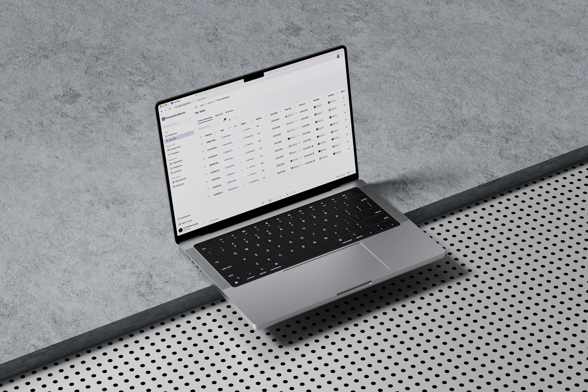

aiio
BPMN · SaaSA BPMN platform for non-technical teams — evolving from a modelling tool into proactive, human-steered process intelligence.

THE PROBLEM
aiio was a capable BPMN platform built by engineers — but every screen had been implemented ad-hoc, with no design system and no one owning the experience end to end. At the same time the company was making a bold bet: that classic BPM is dead, and aiio's future is proactive, agentic process intelligence that a human still steers. That reinvention had to stay legible to the people who actually use it — non-technical teams modelling real business processes, where a confusing screen or an unguarded action isn't a nuisance, it's a broken process. The product needed a design foundation strong enough to carry the bet — and it didn't have one.
WHAT I DID
Mapped the domain and the debt at once
I joined as aiio's first designer, so I read two things in parallel: the BPMN domain and its non-technical users, and the product exactly as engineers had built it. The audit made the gap plain — the software was capable, but inconsistent screen to screen, with no shared language holding it together.
A new direction on the brand — and a real system beneath it
I set a new design direction rooted in aiio's corporate identity: more innovative, more consistent, calmer than the developer-built UI it replaced. The larger call was to stop shipping one-off screens and commit to a system — the agentic, proactive 2.0 vision would only feel trustworthy on a foundation that behaved predictably everywhere.
Built the system while redesigning the product
I led the colour tokens and built aiio's first Figma component library — new components drawn from the brand — in parallel with the redesign itself. The guiding rule came straight from the users: BPMN for non-technical teams has to be genuinely easy, and error-intolerant by design — the interface guides you so the wrong move is hard to make in the first place.
Shipped as a live 2.0
It went live. aiio 2.0 shipped and now runs under a new name — Process Collector — with the design foundation (tokens, components, direction) as what the product is built on, not a coat of paint over the old one.
SELECTED SCREENS


OUTCOME
WHAT I'D DO DIFFERENTLY
Building the design system in parallel with the redesign meant the foundation kept shifting under the product — I'd ship a pattern, then revise it as the system matured. Next time I'd lock a small, strict token core first and grow the component library from that, rather than evolving both at once. Being the first designer also taught me the system only sticks when engineers own it with me — so I spent as much time aligning on the why as on the components themselves.